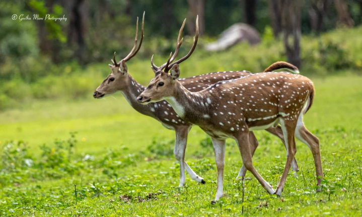

1. State Animal: Spotted Deer (Axis axis)
Scientific Name: Axis axis.
Cultural Significance: The spotted deer is revered in Telangana's folklore and is often associated with grace and beauty. It is a symbol of the state's rich wildlife heritage.
Ecological Importance: Spotted deer play a crucial role in maintaining the ecological balance of forests and grasslands. They are herbivores that help in seed dispersal and control vegetation growth.
Traditional Uses: The deer is hunted for its meat and hide, though this practice is now regulated to protect the species.